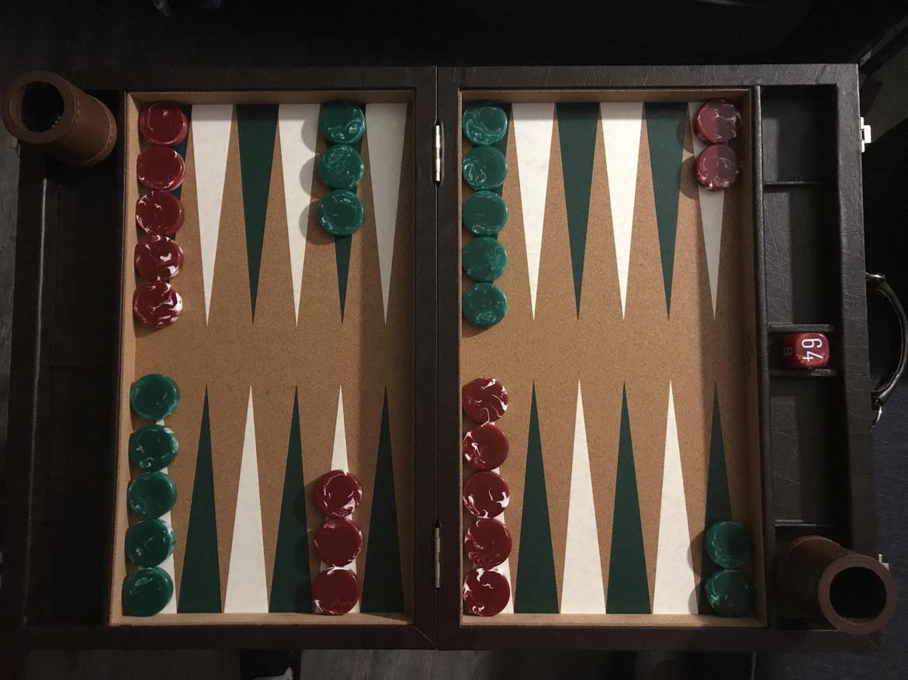

Games
Board games:
- Backgammon 
- Chess
- Crokinole
Backgammon is the oldest game in the world. It takes a lot of abstract thinking and psychological strategy. It's not for the easily frustrated. Backgammon on Wikipedia
Chess is the most popular game in the world. It takes spatial thinking and a lot of tactical and strategic skill. Chess on Wikipedia
Crokinole is an obscure Canadian skill game related to Carrom and Shuffleboard. It takes accurate flicking and a decent amount of tactics. Crokinole on Wikipedia
Video games:
- Animal Crossing
- The Legend of Zelda
- Super Mario
A life simulation game that's creative and relaxing to play. If you plan things out and have some patience it feels like a living art project you make with yourself over time. Animal Crossing on Wikipedia
Classic series of fantasy video games from Nintendo. The most recent two are fully open-world games that have changed the face of the AAA quality video game industry. The Legend of Zelda on Wikipedia
Classic platforming game series. Fun and high-quality games for all ages and skill levels, though they're harder if you're bad at them. Split over time into 3D and 2D series. Super Mario on Wikipedia
Tea
- Black tea
- Green tea
- Oolong tea
Strong and boldly flavored tea steeped at the highest temperature. Fully oxidized. Good in the morning because the balance is toward higher caffeine content. Should only be steeped once. Black tea on Wikipedia
Milder, vegetal-tasting tea steeped at a relatively low temperature. Minimally oxidized. Good in the afternoon because the balance is toward higher theanine content. Can be steeped 2, maybe 3 times. Green tea on Wikipedia
Intermediate style of tea with oxidation ranging from around 10-90%. Boiled at different temperatures depending on oxidation, etc. Check the instructions or look it up for accurate steeping. Can be steeped several times; often said to be tastiest around the third steeping. Oolong tea on Wikipedia
Water activities
- Kayaking
- Pool floats
- Taking a nice shower
Action sport involving a small, maneuverable personal boat with a double-sided paddle. Most fun on a river with rapids and slower sections, as this makes for a varied trip with excitement and scenic relaxation. Also works on a lake.
Inflatable boats that are fun to hang out on when it's sunny. Fun to spin around on. Watching birds, especially hawks, is a big bonus. Don't forget to bring a ball to throw, and maybe a beer, and Connect 4 or some other game that won't be destroyed by water. Eating watermelon on a float is a secret hack.
Light some candles, turn the lights off, and take a nice warm shower. It's good for your body and the low light is good for your eyes. A healthful daily relaxation technique.